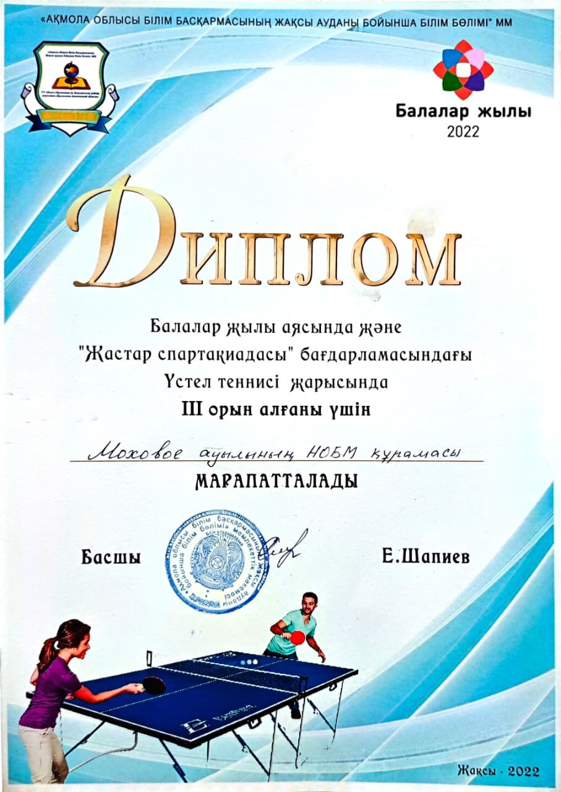
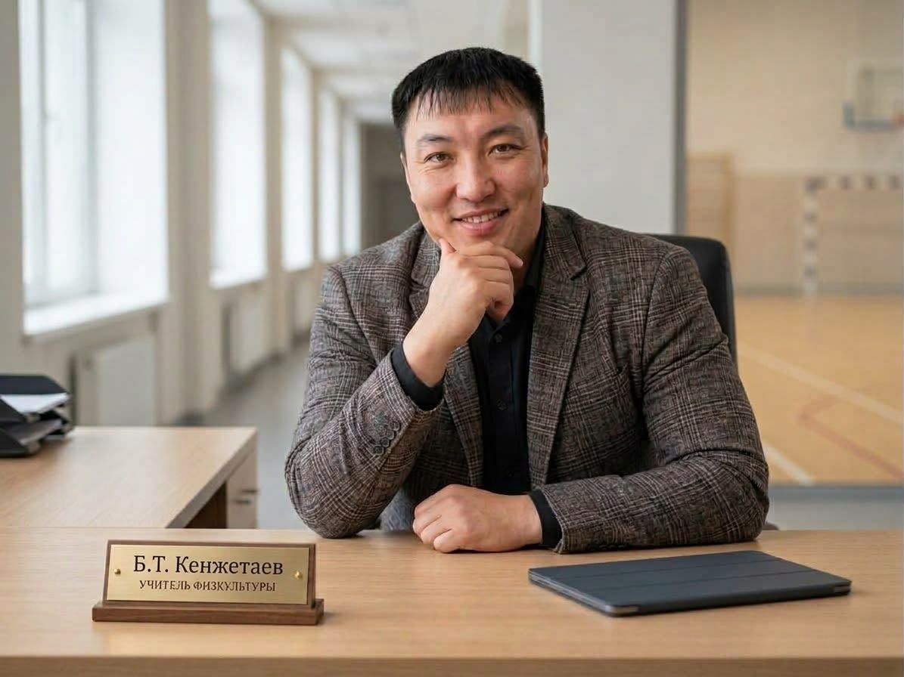
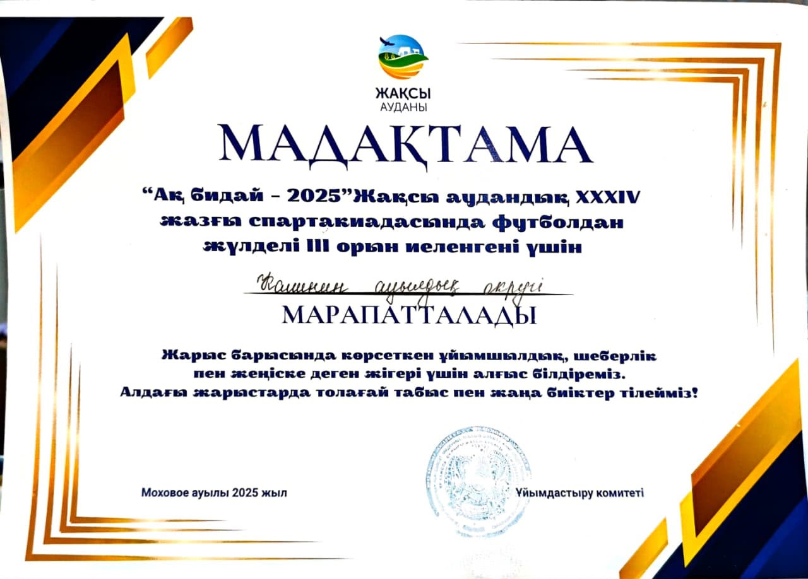
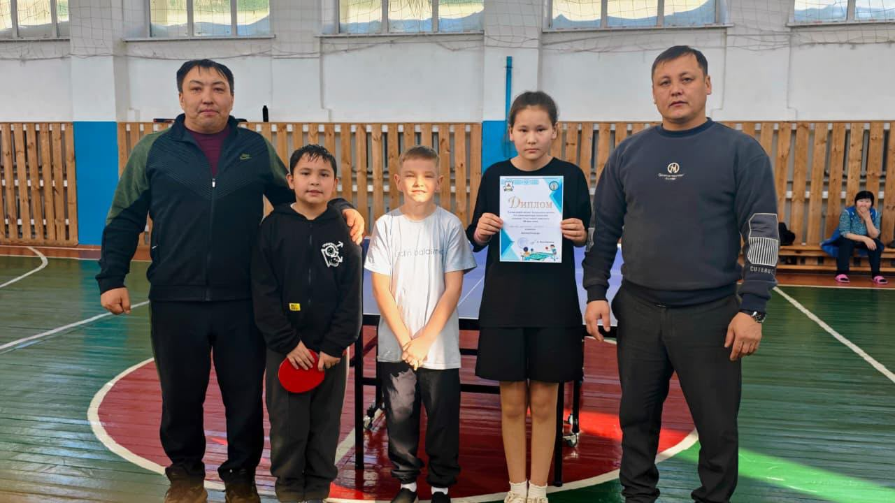
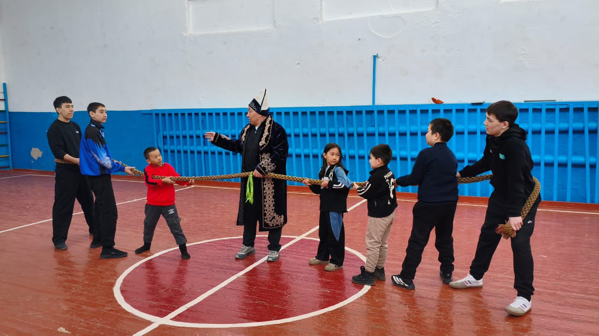
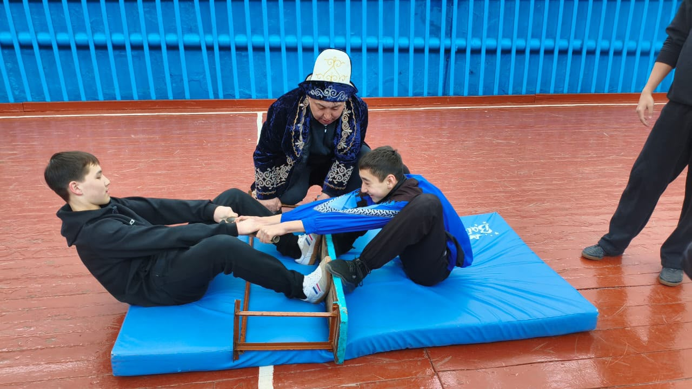
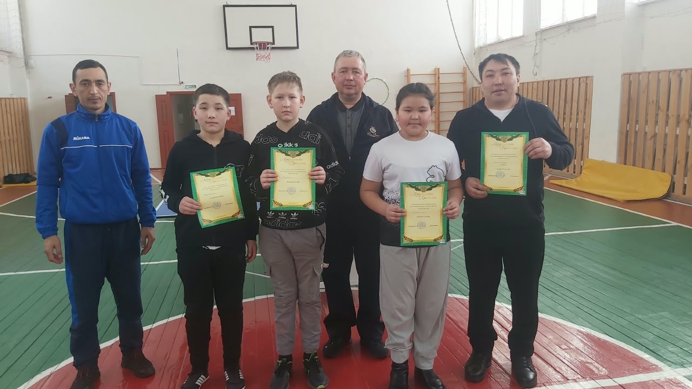

🏆ФОТО ДИПЛОМА №1images/achievement-1.jpg
ДОСТИЖЕНИЕ
ДВИЖЕНИЕ • ЗДОРОВЬЕ • РЕЗУЛЬТАТ
Учитель физической культуры
Помогаю ученикам становиться сильнее, увереннее и активнее — шаг за шагом, урок за уроком.

01 / ЗНАКОМСТВО
Физическая культура — это не только нормативы. Это здоровье, дисциплина, уверенность в себе и умение работать в команде.
Создавать на уроках условия, в которых каждый ученик может развивать физические качества, осваивать двигательные навыки и видеть собственный прогресс.
КГУ «Основная средняя школа села Моховое отдела образования по Жаксынскому району управления образования Акмолинской области»
Правила, подготовленное пространство и внимательное отношение к самочувствию.
Сравниваем результаты ученика прежде всего с его предыдущими попытками.
Честная игра, поддержка партнёра и ответственность за общий результат.
02 / РЕЗУЛЬТАТЫ
Быть учителем это не просто проводить уроки,но и показывать ребятам пример.



Ребята нашей школы в сопровождении учителя физической культуры приняли участие в соревнованиях
03 / ОБУЧЕНИЕ
Примеры структуры уроков физической культуры. Конкретные цели обучения и распределение времени необходимо сверять с действующей типовой учебной программой и календарно-тематическим планом школы.
На уроке ученики знакомятся с задачей, выполняют разминку, отрабатывают двигательные действия, получают обратную связь и оценивают свой прогресс.
Перейти к методическим материалам ↗Приветствие, цель урока, правила безопасности.
Разминка и подготовка мышц и суставов к нагрузке.
Обучение технике, упражнения, работа по станциям или в парах.
Восстановление, обратная связь, самооценка.
Цель: отработать базовую хватку ракетки, исходное положение и простые упражнения на контроль мяча.
Критерии успеха: ученик показывает хватку, принимает готовую стойку, выполняет упражнение на своём уровне и соблюдает безопасность.
Цели обучения уточнить по утверждённому КТП.
▶ Смотреть урок на YouTube ↗Цель: отработать последовательность подачи и приёма, направлять мяч в выбранную зону и возвращаться в готовую стойку.
Критерии успеха: ученик выполняет попытку подачи, выбирает направление, соблюдает правила счёта и уважительно взаимодействует с партнёром.
Адаптировать к классу, уровню подготовленности и КТП.
▶ Смотреть урок на YouTube ↗Цель: познакомиться с безопасным выполнением упражнений с весом собственного тела и лёгким инвентарём.
Критерии успеха: ученик соблюдает технику, контролирует движения и выбирает посильный уровень нагрузки.
Подбирайте упражнения с учётом возраста, состояния здоровья и школьных требований безопасности.
▶ Смотреть урок на YouTube ↗04 / МЕТОДИЧЕСКАЯ РАБОТА
Пособия, практические материалы и разработки для уроков физической культуры.
Техника, подача и приём, тактика, безопасность, оценивание и примеры КСП для 5–9 классов.
Открыть пособие ↗Подбор упражнений, дозирование нагрузки, техника безопасности, планы уроков и чек-листы.
Открыть пособие ↗Структура КСП, этапы урока, действия учителя и учащихся, критерии успеха и ресурсы.
Открыть КСП ↗05 / МОМЕНТЫ В ДВИЖЕНИИ



НАШ ПРИНЦИП
Учимся двигаться, поддерживать друг друга и не останавливаться на достигнутом.